7 Context Free Grammars
7.1 Motivation: The Interpreter and Compiler Front End
An interpreter is a program that reads and executes code. For example, Python and JavaScript are interpreters. A typical interpreter has a front end and a back end. The front end — which includes the lexer, parser, and an optional static analyzer — takes source code and produces an Abstract Syntax Tree (AST), a kind of intermediate representation. The back end (Evaluator) takes the AST and produces output. Compilers are similar, but replace the evaluator with modules that generate code rather than execute it.
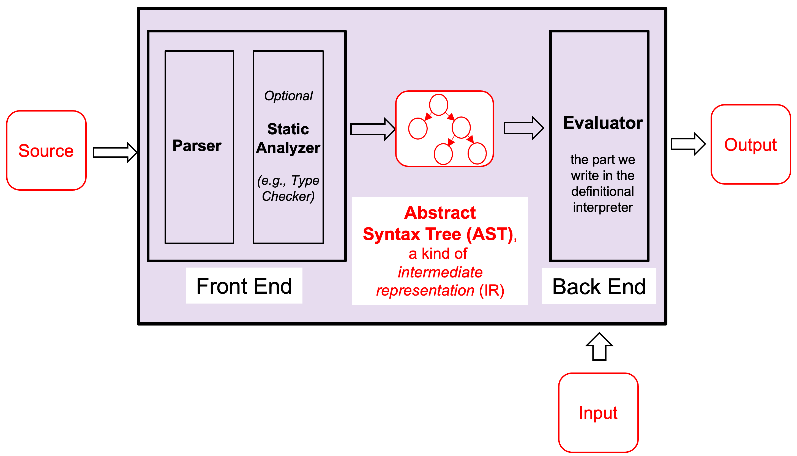
The goal of the front end is to convert program text into an Abstract Syntax Tree (AST). ASTs are easier to analyze, optimize, and execute than raw source code.
As mentioned in the finite automata lecture, regular languages are not powerful enough to recognize programming languages. Because of this limitation, we cannot rely solely on regular expressions. In particular, regular expressions cannot reliably parse nested or paired structures, such as { ... }, (( ... )), and similar constructs.
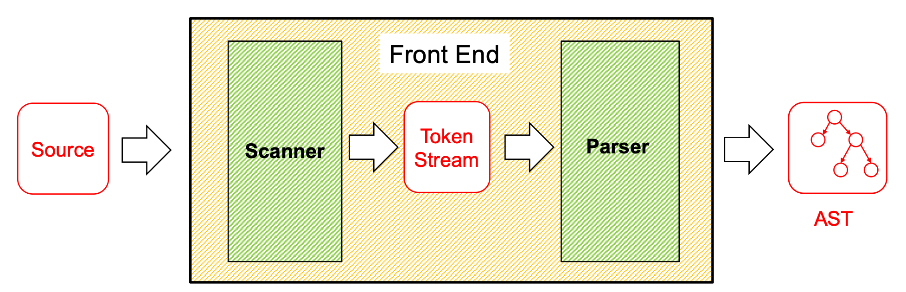
Scanner / Lexer — uses regular expressions to convert the source code into a stream of tokens (keywords, identifiers, operators, numbers, etc.).
Parser — uses Context-Free Grammars (CFGs) to transform the token stream into an AST.
7.2 Context-Free Grammar (CFG)
A Context-Free Grammar (CFG) is a formal way to describe sets of strings (i.e., languages). The notation L(G) denotes the language of strings generated by the grammar G.
CFGs subsume regular expressions (REs), deterministic finite automata (DFAs), and nondeterministic finite automata (NFAs). This means that for every regular language, there exists a CFG that generates it. However, REs are often a more convenient notation for regular languages.
CFGs can also describe languages that regular expressions cannot. For example, the grammar
S → (S) | εBecause of this additional expressive power, CFGs are commonly used as the foundation for parsers in programming languages.
Note: It is called context-free because the production rules apply regardless of the surrounding context.
However, CFGs have limitations. They cannot express every property of programming languages. For example, enforcing that a variable must be declared before it is used requires more expressive power (i.e., a context-sensitive mechanism).
7.2.1 Formal Definition
Σ — alphabet: a finite set of terminal symbols. Often written in lowercase. Example: {0, 1} or {a, b, c}
N — a finite, nonempty set of nonterminal symbols. Often written in UPPERCASE. It must be that N ∩ Σ = ∅. Example: {S, A, B}
P — a set of productions of the form N → (Σ|N)*. Informally: the nonterminal can be replaced by zero or more terminals/nonterminals to the right of the →. Think of productions as rewriting rules.
S ∈ N — the start symbol
For example, the grammar for arithmetic expressions over a, b, c:
E → a | b | c | E+E | E-E | E*E | (E)Σ = { +, -, *, (, ), a, b, c }
N = { E }
P = { E→a, E→b, E→c, E→E-E, E→E+E, E→E*E, E→(E) }
S = E
Valid strings include a, a+b, a*c, a-(b*a), c*(b+a). Invalid strings include d, c(a), a+, b**c.
7.2.2 Backus-Naur Form (BNF)
Context-free grammar production rules are also called Backus-Naur Form or BNF, designed by John Backus and Peter Naur (chair and editor of the Algol committee in the early 1960s).
A production A → B c D is written in BNF as <A> ::= <B> c <D>. Nonterminals use angle brackets and ::= replaces →. Hybrid notations often use ::= but drop the angle brackets, using italics instead. Here is the Java specification in BNF
7.2.3 Notational Shortcuts
S → aBc // S is the start symbol
A → aA
| b // A → b
| // A → εA production is of the form left-hand side (LHS) → right-hand side (RHS)
If not specified, assume the LHS of the first production is the start symbol
Productions with the same LHS are combined using |. For example:
often written asS → A S → BS → A | BIf a production has an empty RHS, it means the RHS is ε
7.3 Generating Strings and Derivations
We can think of a grammar as generating strings by rewriting. Starting from the start symbol, repeatedly replace a nonterminal using one of its productions until no nonterminals remain.
Example grammar G:
S → 0S | 1S | εGenerating the string 011:
S ⇒ 0S // using S → 0S
⇒ 01S // using S → 1S
⇒ 011S // using S → 1S
⇒ 011 // using S → εAnother example: Simple Math Expressions
Expr → Expr + Term
Expr → Expr - Term | Term
Term → Term * Factor | Term / Factor
Term → Factor
Factor → ( Expr ) | numChecking if s ∈ L(G) is called acceptance. The algorithm is to find a rewriting starting from the start symbol that yields s. Such a sequence of rewrites is called a derivation or parse. Discovering the derivation is called parsing.
7.3.1 Derivation Notation
⇒ — indicates a derivation of one step
⇒⁺ — indicates a derivation of one or more steps
⇒* — indicates a derivation of zero or more steps
Example with S → 0S | 1S | ε for the string 010:
S ⇒ 0S ⇒ 01S ⇒ 010S ⇒ 010
S ⇒⁺ 010
010 ⇒* 0107.3.2 Language Generated by a Grammar
The language L(G) defined by grammar G is:
L(G) = { s ∈ Σ* | S ⇒⁺ s }Where S is the start symbol and Σ is the alphabet. In other words: all strings over Σ that can be derived from the start symbol via one or more productions.
For example, given the grammar
S → aS | T
T → bT | U
U → cU | εb: S ⇒ T ⇒ bT ⇒ bU ⇒ b
ac : S ⇒ aS ⇒ aT ⇒ aU ⇒ acU ⇒ ac
bbc : S ⇒ T ⇒ bT ⇒ bbT ⇒ bbU ⇒ bbcU ⇒ bbcS ⇒+ ccc: Yes
S ⇒⁺ bS No
S ⇒⁺ bab No
S ⇒⁺ Ta NoQuiz: Which of the following strings is generated by
this grammar?
S → bS | T
T → aT | U
U → cU | ε
Quiz: Which of the following strings is generated by this grammar?
S → bS | T
T → aT | U
U → cU | εAnswer: ccc.
S ⇒ T ⇒ U ⇒ cU ⇒ ccU ⇒ cccU ⇒ cccQuiz: Which of the following is a derivation of the string aac?
S → bS | T
T → aT | U
U → cU | ε
Quiz: Which of the following is a derivation of the string aac?
S → bS | T
T → aT | U
U → cU | εS ⇒ T ⇒ aT ⇒ aaT ⇒ aaU ⇒ aacU ⇒ aacQuiz: Which of the following regular expressions accepts the same language as this grammar?
S → bS | T
T → aT | U
U → cU | ε
Quiz: Which of the following regular expressions accepts the same language as this grammar?
S → bS | T
T → aT | U
U → cU | εAnswer: b*a*c*
7.4 Designing Grammars
There are four main strategies for designing CFGs:
Strategy 1: Use recursive productions to generate an arbitrary number of symbols:
A → xA | ε // zero or more x's
A → yA | y // one or more y'sStrategy 2: Use separate nonterminals to generate disjoint parts, then combine in a single production. For the language a*b* (any number of a’s followed by any number of b’s):
S → AB
A → aA | ε // zero or more a's
B → bB | ε // zero or more b'sStrategy 3: To generate languages with matching, balanced, or related numbers of symbols, write productions that generate strings from the middle.
For {aⁿbⁿ | n ≥ 0} (N a’s followed by N b’s):
S → aSb | εFor {aⁿb²ⁿ | n ≥ 0} (N a’s followed by 2N b’s):
S → aSbb | εStrategy 4: For a language that is the union of other languages, use separate nonterminals for each part of the union and then combine.
For { aⁿ(bᵐ|cᵐ) | m > n ≥ 0 }, rewrite as { aⁿbᵐ | m > n ≥ 0 } ∪ { aⁿcᵐ | m > n ≥ 0 }:
S → T | V
T → aTb | U // aⁿbᵐ where m > n ≥ 0
U → Ub | b
V → aVc | W // aⁿcᵐ where m > n ≥ 0
W → Wc | cQuiz: make a grammar for: 0*|1*
S → A | B
A → 0A | ε
B → 1B | εQuiz: make a grammar for:0ⁿ1ⁿ where n ≥ 0
S → 0S1 | εQuiz: Which of the following grammars describes the same language as 0ⁿ1ᵐ where m ≤ n ?
Quiz: Which of the following grammars describes the same language as 0ⁿ1ᵐ where m ≤ n ?
Answer: S → 0S1 | 0S | ε
7.5 Parse Trees
Root node is the start symbol
Every internal node is a nonterminal
Children of an internal node are the symbols on the RHS of the production applied to that nonterminal
Every leaf node is a terminal or ε
Reading the leaves left to right gives the string corresponding to the tree.
For example: given the grammar:
S → aS | T
T → bT | U
U → cU | ε
S // start
S ⇒ aS // S has children: a, S
S ⇒ aS ⇒ aT // right S has child: T
S ⇒ aT ⇒ aU // T has child: U
S ⇒ aU ⇒ acU // U has children: c, U
S ⇒ acU ⇒ ac // final U has child: εThe completed parse tree is shown below:
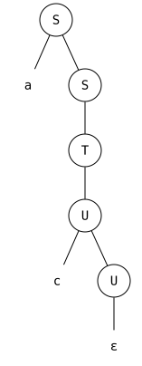
7.5.1 Parse Trees for Expressions
A parse tree shows the structure of an expression as it corresponds to the grammar. For the grammar
E → a | b | c | d | E+E | E-E | E*E | (E)Parse tree for a:
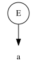
Parse tree for a*c:
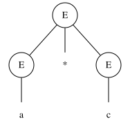
Parse tree for c*(b+d):
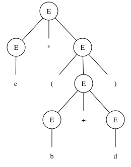
7.5.2 Abstract Syntax Trees vs. Parse Trees
A parse tree and an AST are not the same thing. The AST is a data structure produced by parsing — it drops syntactic noise (like parentheses and grammar nonterminals) and records only the key semantic elements.
An AST can be expressed with an OCaml datatype that is very close to the CFG that describes the language syntax CFG for arithmetic expressions:
E → a | b | c | d
| E+E
| E-E
| E*E
| (E)AST:
type expr = A | B | C | D
| Plus of expr * expr
| Minus of expr * expr
| Mult of expr * exprExpression | Parses to |
a-c | Minus (A, C) |
a-(b*a) | Minus (A, Mult (B,A)) |
c*(b+d) | Mult (C, Plus (B,D)) |
Parse tree: a*c: |
| AST: a*c: 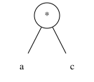 |
In OCaml code, we can represent the AST as: Mult(Var("a"), Var("c"))
Parse tree: c*(b+d): |
| AST: c*(b+d): 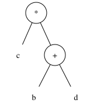 |
In OCaml code, we can represent the AST as: Mult(Var("c"), Plus(Var("b"), Var("d")))
7.6 Leftmost and Rightmost Derivation
Leftmost derivation — the leftmost nonterminal is replaced at each step
Rightmost derivation — the rightmost nonterminal is replaced at each step
Example with grammar:
S → AB
A → a
B → b
Leftmost: S ⇒ AB ⇒ aB ⇒ ab
Rightmost: S ⇒ AB ⇒ Ab ⇒ abParse trees show the structure of a derivation, but they do not show the order in which productions are applied.
For every parse tree, there is a unique leftmost derivation and a unique rightmost derivation. Both derivations may produce the same parse tree.
For example, the leftmost and rightmost derivations of the string ab shown above both correspond to the following parse tree.
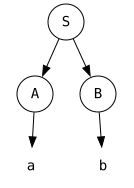
7.7 Ambiguity
7.7.1 Multiple Parse Trees
Not every string has a unique parse tree. Example with S → a | SbS for string "ababa":
Leftmost derivation 1:
S ⇒ SbS ⇒ abS ⇒ abSbS ⇒ ababS ⇒ ababa
Another leftmost derivation:
S ⇒ SbS ⇒ SbSbS ⇒ abSbS ⇒ ababS ⇒ ababaLeftmost derivation 1: 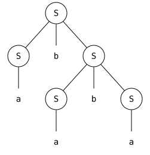 |
| Another Leftmost Derivation: 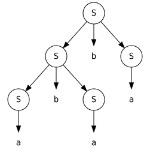 |
A grammar is ambiguous if a string in its language has multiple leftmost derivations.
Human language is often ambiguous. For example, the sentence “I saw a girl with a telescope” can be interpreted in two ways: either the speaker is using the telescope, or the girl is carrying the telescope.
Different associativity: (a-b)-c vs. a-(b-c)
Different precedence: (a-b)*c vs. a-(b*c)
Different control flow: if (if else) vs. if (if) else
E → a | b | c | E+E | E-E | E*E | (E)E ⇒ E-E ⇒ a-E ⇒ a-E-E ⇒ a-b-E ⇒ a-(b-c) 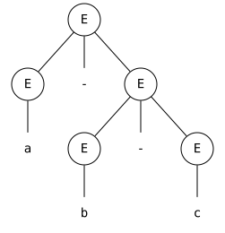 |
| E ⇒ E-E ⇒ E-E-E ⇒ a-E-E ⇒ a-b-E ⇒ (a-b)-c 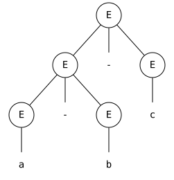 |
That is, one compiler might interpret 1 − 2 − 3 as (1 − 2) − 3 = −4, while another might interpret it as 1 − (2 − 3) = 2, and both would consider their result correct. Clearly, such ambiguity is unacceptable in programming languages.
E ⇒ E-E ⇒ a-E ⇒ a-E*E ⇒a-b*E ⇒ a-(b*c) 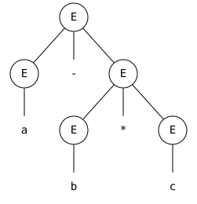 |
| E ⇒ E-E ⇒ E-E*E ⇒ a-E*E ⇒ a-b*E ⇒ (a-b)*c |
The Dangling Else Problem: Consider this grammar for if-statements:
<stmt> → <assignment> | <if-stmt> | ...
<if-stmt> → if (<expr>) <stmt>
| if (<expr>) <stmt> else <stmt>The fragment if (x > y) if (x < z) a = 1; else a = 2; has two valid parse trees — the else can bind to either the inner if or the outer if.
if (x > y)
if (x < z)
a = 1;
else
a = 2
if (x > y)
if (x < z)
a = 1;
else
a = 27.8 Dealing with Ambiguous Grammars
There is no algorithm that can determine for every CFG whether it is ambiguous. Formally, the ambiguity problem for CFGs is undecidable.
In practice, to demonstrate that a grammar is ambiguous, we try to find a string with two different leftmost derivations or construct two different parse trees for the same string.
Rewrite the grammar — grammars are not unique; multiple grammars can generate the same language but result in different (unambiguous) parses
Use special parsing rules — depending on the parsing tool (e.g., precedence/associativity declarations in Yacc)
7.8.1 Fixing Associativity
To enforce left associativity, require the right operand to not be a bare expression (left-recursive productions):
E → E+T | E-T | E*T | T
T → a | b | c | (E)Now a-b-c has only one parse tree, corresponding to (a-b)-c.
For right associativity, use right-recursive productions:
E → T+E | T-E | T*E | T
T → a | b | c | (E)The kind of recursion determines the shape of the parse tree: left recursion produces a left-leaning (deep-left) tree, right recursion produces a right-leaning (deep-right) tree.
7.8.2 Fixing Precedence
When a nonterminal has productions for several operators, those operators effectively have the same precedence. For example, the grammar E → E+T | E-T | E*T | T treats +, -, and * with the same precedence, which is wrong for a+b*c.
Solution: introduce new nonterminals. Precedence increases closer to operands:
E → E+T | E-T | T // lowest precedence: +, -
T → T*P | P // higher precedence: *
P → (E) | a | b | c // highest precedence: atomsThis unambiguous grammar generates the same strings as the original expression grammar while correctly enforcing precedence and left associativity.
7.9 Parsing Algorithms
LL(k) parsing
LR(k) parsing
LALR(k) parsing
SLR(k) parsing
Tools exist for building parsers from grammars automatically (e.g., JavaCC, Yacc). LL(k) parsing will be discussed in the next lecture.
7.10 Summary
The front end of an interpreter/compiler converts source to an AST using a scanner (regexps) and a parser (CFGs)
A CFG is a 4-tuple (Σ, N, P, S): terminals, nonterminals, productions, and a start symbol
Strings are generated by rewriting from the start symbol; a sequence of rewrites is a derivation
L(G) = { s ∈ Σ* | S ⇒⁺ s }
A parse tree shows the structure of a derivation; an AST is a data structure produced by parsing
A grammar is ambiguous if any string has multiple leftmost derivations (multiple parse trees)
Ambiguity can be resolved by rewriting the grammar to enforce desired associativity and precedence